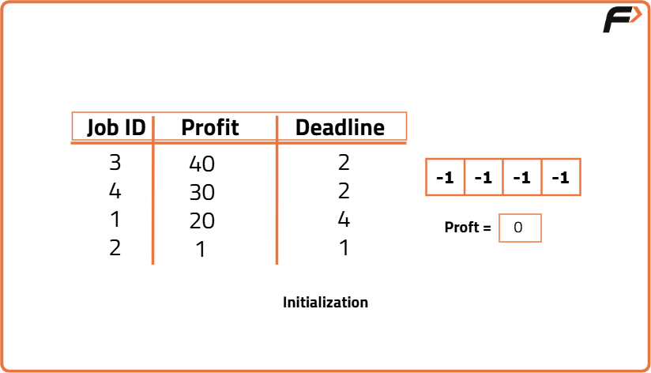
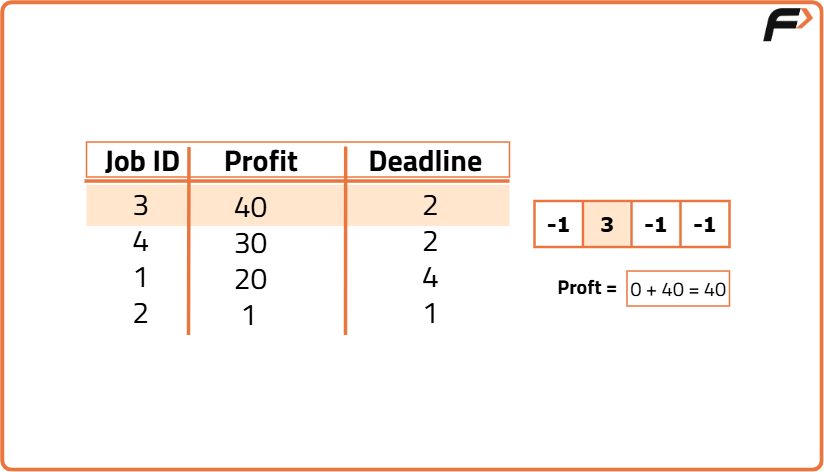
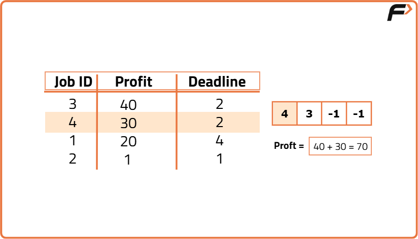
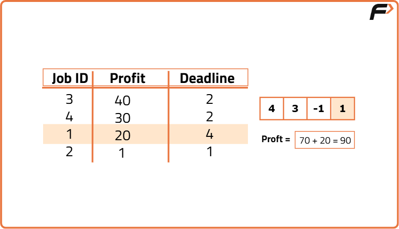
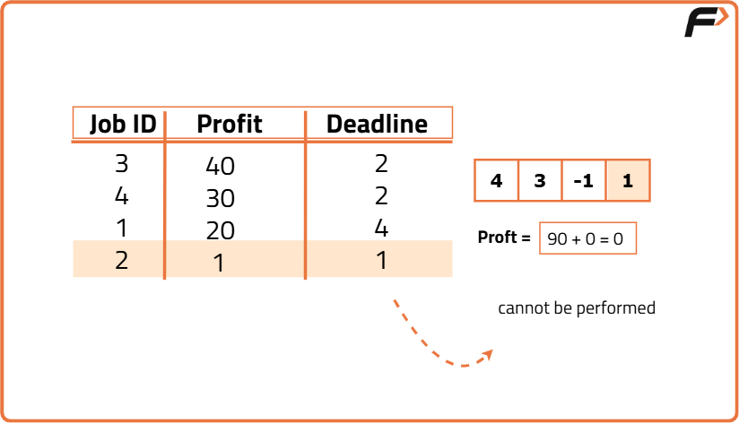

Job Sequencing Problem
Problem Statement: You are given a set of N jobs where each job comes with a deadline and profit. The profit can only be earned upon completing the job within its deadline. Find the number of jobs done and the maximum profit that can be obtained. Each job takes a single unit of time and only one job can be performed at a time.
Examples
Example 1:
Input:
N = 4, Jobs = {(1, 4, 20), (2, 1, 10), (3, 1, 40), (4, 1, 30)}
Output: 2 60
Explanation:
- The 3rd job with a deadline of 1 is performed during the first unit of time.
- The 1st job is performed during the second unit of time as its deadline is 4.
Profit = 40 + 20 = 60.
So, the result is 2 jobs with a total profit of 60.
Example 2:
Input:
N = 5, Jobs = {(1, 2, 100), (2, 1, 19), (3, 2, 27), (4, 1, 25), (5, 1, 15)}
Output: 2 127
Explanation:
The first and third jobs, both having a deadline of 2, give the highest profit.
Profit = 100 + 27 = 127.
So, the result is 2 jobs with a total profit of 127.
Disclaimer: Here is the practice link to help you assess your knowledge better. It's highly recommend trying to solve it before looking at the solution.
Approach
Algorithm
- Sort the jobs in descending order of profit.
- If the maximum deadline is x, create an array of size x. Initialize each array index to -1 to represent that no jobs have been performed yet.
- For each job, check if it can be performed on its last day (i.e., check if the index corresponding to its deadline is available).
- If the job can be performed on its last day, mark that index with the job ID and add the profit to the total.
- If the job cannot be performed on its last day, loop through the previous indexes to find an empty slot and schedule the job there.





Code
#include<bits/stdc++.h>
using namespace std;
// A structure to represent a job
struct Job {
// Job Id
int id;
// Deadline of job
int dead;
// Profit if job is completed before or on the deadline
int profit;
};
class Solution {
public:
// Comparator function to sort jobs in decreasing order of profit
bool static comparison(Job a, Job b) {
// Sort by profit in descending order
return (a.profit > b.profit);
}
// Function to find the maximum profit and the number of jobs done
pair < int, int > JobScheduling(Job arr[], int n) {
// Sort the jobs based on decreasing profit
sort(arr, arr + n, comparison);
// Find the maximum deadline among all jobs
int maxi = arr[0].dead;
for (int i = 1; i < n; i++) {
// Get the latest deadline
maxi = max(maxi, arr[i].dead);
}
// Initialize the slot array to track which time slots are taken
int slot[maxi + 1];
for (int i = 0; i <= maxi; i++)
// Mark all slots as unoccupied initially
slot[i] = -1;
int countJobs = 0, jobProfit = 0;
// Iterate through all jobs to find the best possible schedule
for (int i = 0; i < n; i++) {
// Find a slot for the current job (starting from its deadline)
for (int j = arr[i].dead; j > 0; j--) {
// If the slot is available
if (slot[j] == -1) {
// Assign the job to the slot
slot[j] = i;
// Increment the number of jobs done
countJobs++;
// Add the profit of the job
jobProfit += arr[i].profit;
break;
}
}
}
// Return the number of jobs done and the total profit
return make_pair(countJobs, jobProfit);
}
};
int main() {
// Driver code
int n = 4;
// Define jobs with id, deadline, and profit
Job arr[n] = {{1,4,20},{2,1,10},{3,2,40},{4,2,30}};
Solution ob;
// Function call to find the number of jobs done and total profit
pair < int, int > ans = ob.JobScheduling(arr, n);
// Output the number of jobs and the total profit
cout << ans.first << " " << ans.second << endl;
return 0;
}Complexity Analysis
Time Complexity: O(N log N) + O(N * M), O(N log N) for sorting the jobs in decreasing order of profit. O(N * M) since we are iterating through all N jobs and for every job, we are checking from the last deadline, say M deadlines in the worst case.
Space Complexity: O(M), for an array that keeps track of which day each job is performed if M is the maximum deadline available.